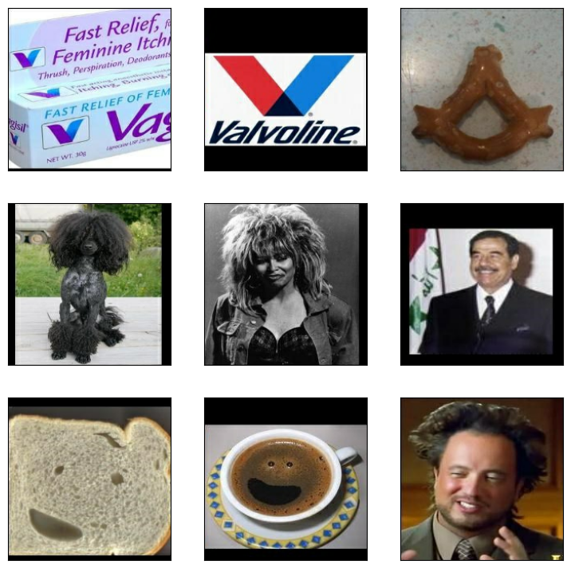
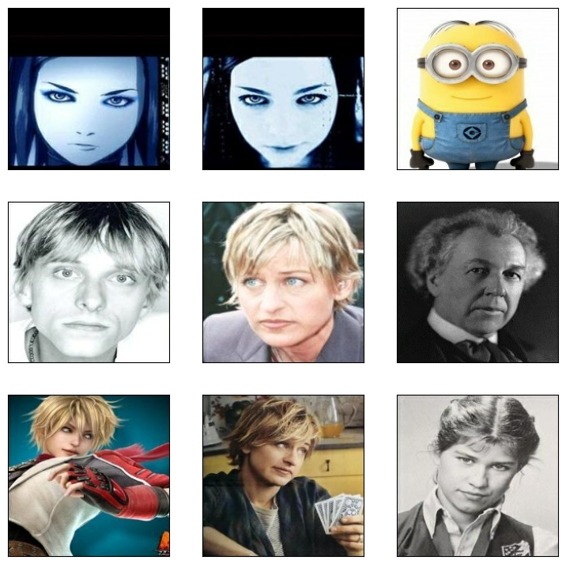

Image similarity estimation using a Siamese Network with a triplet loss
Authors: Hazem Essam and Santiago L. Valdarrama
Date created: 2021/03/25
Last modified: 2021/03/25
Description: Training a Siamese Network to compare the similarity of images using a triplet loss function.

Introduction
A Siamese Network is a type of network architecture that contains two or more identical subnetworks used to generate feature vectors for each input and compare them.
Siamese Networks can be applied to different use cases, like detecting duplicates, finding anomalies, and face recognition.
This example uses a Siamese Network with three identical subnetworks. We will provide three images to the model, where two of them will be similar (anchor and positive samples), and the third will be unrelated (a negative example.) Our goal is for the model to learn to estimate the similarity between images.
For the network to learn, we use a triplet loss function. You can find an introduction to triplet loss in the FaceNet paper by Schroff et al,. 2015. In this example, we define the triplet loss function as follows:
L(A, P, N) = max(‖f(A) - f(P)‖² - ‖f(A) - f(N)‖² + margin, 0)
This example uses the Totally Looks Like dataset by Rosenfeld et al., 2018.
Setup
import matplotlib.pyplot as plt
import numpy as np
import os
import random
import tensorflow as tf
from pathlib import Path
from keras import applications
from keras import layers
from keras import losses
from keras import ops
from keras import optimizers
from keras import metrics
from keras import Model
from keras.applications import resnet
target_shape = (200, 200)
Load the dataset
We are going to load the Totally Looks Like dataset and unzip it inside the ~/.keras directory
in the local environment.
The dataset consists of two separate files:
left.zipcontains the images that we will use as the anchor.right.zipcontains the images that we will use as the positive sample (an image that looks like the anchor).
cache_dir = Path(Path.home()) / ".keras"
anchor_images_path = cache_dir / "left"
positive_images_path = cache_dir / "right"
!gdown --id 1jvkbTr_giSP3Ru8OwGNCg6B4PvVbcO34
!gdown --id 1EzBZUb_mh_Dp_FKD0P4XiYYSd0QBH5zW
!unzip -oq left.zip -d $cache_dir
!unzip -oq right.zip -d $cache_dir
Downloading...
From (uriginal): https://drive.google.com/uc?id=1jvkbTr_giSP3Ru8OwGNCg6B4PvVbcO34
From (redirected): https://drive.google.com/uc?id=1jvkbTr_giSP3Ru8OwGNCg6B4PvVbcO34&confirm=t&uuid=be98abe4-8be7-4c5f-a8f9-ca95d178fbda
To: /home/scottzhu/keras-io/scripts/tmp_9629511/left.zip
100%|█████████████████████████████████████████| 104M/104M [00:00<00:00, 278MB/s]
/home/scottzhu/.local/lib/python3.10/site-packages/gdown/cli.py:126: FutureWarning: Option `--id` was deprecated in version 4.3.1 and will be removed in 5.0. You don't need to pass it anymore to use a file ID.
Downloading...
From (uriginal): https://drive.google.com/uc?id=1EzBZUb_mh_Dp_FKD0P4XiYYSd0QBH5zW
From (redirected): https://drive.google.com/uc?id=1EzBZUb_mh_Dp_FKD0P4XiYYSd0QBH5zW&confirm=t&uuid=0eb1b2e2-beee-462a-a9b8-c0bf21bea257
To: /home/scottzhu/keras-io/scripts/tmp_9629511/right.zip
100%|█████████████████████████████████████████| 104M/104M [00:00<00:00, 285MB/s]
Preparing the data
We are going to use a tf.data pipeline to load the data and generate the triplets that we
need to train the Siamese network.
We'll set up the pipeline using a zipped list with anchor, positive, and negative filenames as the source. The pipeline will load and preprocess the corresponding images.
def preprocess_image(filename):
"""
Load the specified file as a JPEG image, preprocess it and
resize it to the target shape.
"""
image_string = tf.io.read_file(filename)
image = tf.image.decode_jpeg(image_string, channels=3)
image = tf.image.convert_image_dtype(image, tf.float32)
image = tf.image.resize(image, target_shape)
return image
def preprocess_triplets(anchor, positive, negative):
"""
Given the filenames corresponding to the three images, load and
preprocess them.
"""
return (
preprocess_image(anchor),
preprocess_image(positive),
preprocess_image(negative),
)
Let's setup our data pipeline using a zipped list with an anchor, positive, and negative image filename as the source. The output of the pipeline contains the same triplet with every image loaded and preprocessed.
# We need to make sure both the anchor and positive images are loaded in
# sorted order so we can match them together.
anchor_images = sorted(
[str(anchor_images_path / f) for f in os.listdir(anchor_images_path)]
)
positive_images = sorted(
[str(positive_images_path / f) for f in os.listdir(positive_images_path)]
)
image_count = len(anchor_images)
anchor_dataset = tf.data.Dataset.from_tensor_slices(anchor_images)
positive_dataset = tf.data.Dataset.from_tensor_slices(positive_images)
# To generate the list of negative images, let's randomize the list of
# available images and concatenate them together.
rng = np.random.RandomState(seed=42)
rng.shuffle(anchor_images)
rng.shuffle(positive_images)
negative_images = anchor_images + positive_images
np.random.RandomState(seed=32).shuffle(negative_images)
negative_dataset = tf.data.Dataset.from_tensor_slices(negative_images)
negative_dataset = negative_dataset.shuffle(buffer_size=4096)
dataset = tf.data.Dataset.zip((anchor_dataset, positive_dataset, negative_dataset))
dataset = dataset.shuffle(buffer_size=1024)
dataset = dataset.map(preprocess_triplets)
# Let's now split our dataset in train and validation.
train_dataset = dataset.take(round(image_count * 0.8))
val_dataset = dataset.skip(round(image_count * 0.8))
train_dataset = train_dataset.batch(32, drop_remainder=False)
train_dataset = train_dataset.prefetch(tf.data.AUTOTUNE)
val_dataset = val_dataset.batch(32, drop_remainder=False)
val_dataset = val_dataset.prefetch(tf.data.AUTOTUNE)
Let's take a look at a few examples of triplets. Notice how the first two images look alike while the third one is always different.
def visualize(anchor, positive, negative):
"""Visualize a few triplets from the supplied batches."""
def show(ax, image):
ax.imshow(image)
ax.get_xaxis().set_visible(False)
ax.get_yaxis().set_visible(False)
fig = plt.figure(figsize=(9, 9))
axs = fig.subplots(3, 3)
for i in range(3):
show(axs[i, 0], anchor[i])
show(axs[i, 1], positive[i])
show(axs[i, 2], negative[i])
visualize(*list(train_dataset.take(1).as_numpy_iterator())[0])

Setting up the embedding generator model
Our Siamese Network will generate embeddings for each of the images of the
triplet. To do this, we will use a ResNet50 model pretrained on ImageNet and
connect a few Dense layers to it so we can learn to separate these
embeddings.
We will freeze the weights of all the layers of the model up until the layer conv5_block1_out.
This is important to avoid affecting the weights that the model has already learned.
We are going to leave the bottom few layers trainable, so that we can fine-tune their weights
during training.
base_cnn = resnet.ResNet50(
weights="imagenet", input_shape=target_shape + (3,), include_top=False
)
flatten = layers.Flatten()(base_cnn.output)
dense1 = layers.Dense(512, activation="relu")(flatten)
dense1 = layers.BatchNormalization()(dense1)
dense2 = layers.Dense(256, activation="relu")(dense1)
dense2 = layers.BatchNormalization()(dense2)
output = layers.Dense(256)(dense2)
embedding = Model(base_cnn.input, output, name="Embedding")
trainable = False
for layer in base_cnn.layers:
if layer.name == "conv5_block1_out":
trainable = True
layer.trainable = trainable
Setting up the Siamese Network model
The Siamese network will receive each of the triplet images as an input, generate the embeddings, and output the distance between the anchor and the positive embedding, as well as the distance between the anchor and the negative embedding.
To compute the distance, we can use a custom layer DistanceLayer that
returns both values as a tuple.
class DistanceLayer(layers.Layer):
"""
This layer is responsible for computing the distance between the anchor
embedding and the positive embedding, and the anchor embedding and the
negative embedding.
"""
def __init__(self, **kwargs):
super().__init__(**kwargs)
def call(self, anchor, positive, negative):
ap_distance = ops.sum(tf.square(anchor - positive), -1)
an_distance = ops.sum(tf.square(anchor - negative), -1)
return (ap_distance, an_distance)
anchor_input = layers.Input(name="anchor", shape=target_shape + (3,))
positive_input = layers.Input(name="positive", shape=target_shape + (3,))
negative_input = layers.Input(name="negative", shape=target_shape + (3,))
distances = DistanceLayer()(
embedding(resnet.preprocess_input(anchor_input)),
embedding(resnet.preprocess_input(positive_input)),
embedding(resnet.preprocess_input(negative_input)),
)
siamese_network = Model(
inputs=[anchor_input, positive_input, negative_input], outputs=distances
)
Putting everything together
We now need to implement a model with custom training loop so we can compute the triplet loss using the three embeddings produced by the Siamese network.
Let's create a Mean metric instance to track the loss of the training process.
class SiameseModel(Model):
"""The Siamese Network model with a custom training and testing loops.
Computes the triplet loss using the three embeddings produced by the
Siamese Network.
The triplet loss is defined as:
L(A, P, N) = max(‖f(A) - f(P)‖² - ‖f(A) - f(N)‖² + margin, 0)
"""
def __init__(self, siamese_network, margin=0.5):
super().__init__()
self.siamese_network = siamese_network
self.margin = margin
self.loss_tracker = metrics.Mean(name="loss")
def call(self, inputs):
return self.siamese_network(inputs)
def train_step(self, data):
# GradientTape is a context manager that records every operation that
# you do inside. We are using it here to compute the loss so we can get
# the gradients and apply them using the optimizer specified in
# `compile()`.
with tf.GradientTape() as tape:
loss = self._compute_loss(data)
# Storing the gradients of the loss function with respect to the
# weights/parameters.
gradients = tape.gradient(loss, self.siamese_network.trainable_weights)
# Applying the gradients on the model using the specified optimizer
self.optimizer.apply_gradients(
zip(gradients, self.siamese_network.trainable_weights)
)
# Let's update and return the training loss metric.
self.loss_tracker.update_state(loss)
return {"loss": self.loss_tracker.result()}
def test_step(self, data):
loss = self._compute_loss(data)
# Let's update and return the loss metric.
self.loss_tracker.update_state(loss)
return {"loss": self.loss_tracker.result()}
def _compute_loss(self, data):
# The output of the network is a tuple containing the distances
# between the anchor and the positive example, and the anchor and
# the negative example.
ap_distance, an_distance = self.siamese_network(data)
# Computing the Triplet Loss by subtracting both distances and
# making sure we don't get a negative value.
loss = ap_distance - an_distance
loss = tf.maximum(loss + self.margin, 0.0)
return loss
@property
def metrics(self):
# We need to list our metrics here so the `reset_states()` can be
# called automatically.
return [self.loss_tracker]
Training
We are now ready to train our model.
siamese_model = SiameseModel(siamese_network)
siamese_model.compile(optimizer=optimizers.Adam(0.0001))
siamese_model.fit(train_dataset, epochs=10, validation_data=val_dataset)
Epoch 1/10
1/151 [37m━━━━━━━━━━━━━━━━━━━━ 1:21:32 33s/step - loss: 1.5020
WARNING: All log messages before absl::InitializeLog() is called are written to STDERR
I0000 00:00:1699919378.193493 9680 device_compiler.h:187] Compiled cluster using XLA! This line is logged at most once for the lifetime of the process.
151/151 ━━━━━━━━━━━━━━━━━━━━ 80s 317ms/step - loss: 0.7004 - val_loss: 0.3704
Epoch 2/10
151/151 ━━━━━━━━━━━━━━━━━━━━ 20s 136ms/step - loss: 0.3749 - val_loss: 0.3609
Epoch 3/10
151/151 ━━━━━━━━━━━━━━━━━━━━ 21s 140ms/step - loss: 0.3548 - val_loss: 0.3399
Epoch 4/10
151/151 ━━━━━━━━━━━━━━━━━━━━ 20s 135ms/step - loss: 0.3432 - val_loss: 0.3533
Epoch 5/10
151/151 ━━━━━━━━━━━━━━━━━━━━ 20s 134ms/step - loss: 0.3299 - val_loss: 0.3522
Epoch 6/10
151/151 ━━━━━━━━━━━━━━━━━━━━ 20s 135ms/step - loss: 0.3263 - val_loss: 0.3177
Epoch 7/10
151/151 ━━━━━━━━━━━━━━━━━━━━ 20s 134ms/step - loss: 0.3032 - val_loss: 0.3308
Epoch 8/10
151/151 ━━━━━━━━━━━━━━━━━━━━ 20s 134ms/step - loss: 0.2944 - val_loss: 0.3282
Epoch 9/10
151/151 ━━━━━━━━━━━━━━━━━━━━ 20s 135ms/step - loss: 0.2893 - val_loss: 0.3046
Epoch 10/10
151/151 ━━━━━━━━━━━━━━━━━━━━ 20s 134ms/step - loss: 0.2679 - val_loss: 0.2841
<keras.src.callbacks.history.History at 0x7f6945c08820>
Inspecting what the network has learned
At this point, we can check how the network learned to separate the embeddings depending on whether they belong to similar images.
We can use cosine similarity to measure the similarity between embeddings.
Let's pick a sample from the dataset to check the similarity between the embeddings generated for each image.
sample = next(iter(train_dataset))
visualize(*sample)
anchor, positive, negative = sample
anchor_embedding, positive_embedding, negative_embedding = (
embedding(resnet.preprocess_input(anchor)),
embedding(resnet.preprocess_input(positive)),
embedding(resnet.preprocess_input(negative)),
)

Finally, we can compute the cosine similarity between the anchor and positive images and compare it with the similarity between the anchor and the negative images.
We should expect the similarity between the anchor and positive images to be larger than the similarity between the anchor and the negative images.
cosine_similarity = metrics.CosineSimilarity()
positive_similarity = cosine_similarity(anchor_embedding, positive_embedding)
print("Positive similarity:", positive_similarity.numpy())
negative_similarity = cosine_similarity(anchor_embedding, negative_embedding)
print("Negative similarity", negative_similarity.numpy())
Positive similarity: 0.99608964
Negative similarity 0.9941576
Summary
-
The
tf.dataAPI enables you to build efficient input pipelines for your model. It is particularly useful if you have a large dataset. You can learn more abouttf.datapipelines in tf.data: Build TensorFlow input pipelines. -
In this example, we use a pre-trained ResNet50 as part of the subnetwork that generates the feature embeddings. By using transfer learning, we can significantly reduce the training time and size of the dataset.
-
Notice how we are fine-tuning the weights of the final layers of the ResNet50 network but keeping the rest of the layers untouched. Using the name assigned to each layer, we can freeze the weights to a certain point and keep the last few layers open.
-
We can create custom layers by creating a class that inherits from
tf.keras.layers.Layer, as we did in theDistanceLayerclass. -
We used a cosine similarity metric to measure how to 2 output embeddings are similar to each other.
-
You can implement a custom training loop by overriding the
train_step()method.train_step()usestf.GradientTape, which records every operation that you perform inside it. In this example, we use it to access the gradients passed to the optimizer to update the model weights at every step. For more details, check out the Intro to Keras for researchers and Writing a training loop from scratch.